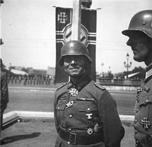
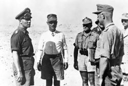
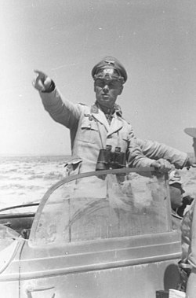
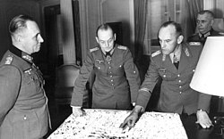
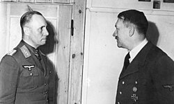

Yaşamı
İlk Yılları
Rommel, Ulm'un 33 km kuzeyindeki Heidenheim kentinde doğdu. On dört yaşındayken bir arkadaşıyla
birlikte tam ölçekte bir planör yapmayı başardılar. Genç Erwin'in mühendis olma düşüncesine
karşın 1910 yılında babasının ısrarıyla 124. Württemberg Piyade Alayına subay adayı olarak
katıldı ve kısa süre sonra da Danzig'deki Subay Hazırlama Okuluna gönderildi. Kasım 1911'de
okuldan mezun olarak Ocak 1912'de Teğmenliğe atandı.
II. Dünya Savaşı Öncesi
Savaş öncesinde Rommel tabur komutanlıklarında bulundu ve 1929-1933 arasında Dresden Piyade
Okulunda ve 1935-1939 arasında da Potsdam Savaş Akademisinde öğreticilik yaptı. Rommel'in savaş
hatıratı Piyade Hücumu (Infanterie greift an) 1937'de yayınlandıktan sonra bir askeri başvuru
kaynağı olarak ilgi gördü ve aynı zamanda Adolf Hitler'in de ilgisini çekerek Hitler Gençliğinin
(Hitlerjugend) eğitiminden sorumlu komutan görevine getirilmesine neden oldu. 1938'de artık
albay olan Rommel Wiener Neustadt'taki Savaş Akademisi komutanlığına atandı. Burada, Piyade
Hücumu'nun devamı olan Tank Hücumu'nu (Panzer greift an) yazmaya başladı. Ancak bir süre sonra
görevden alındı fakat Hitler'in özel koruma taburunun (LSSAH Führer-Begleitbattalion)
komutanlığına getirildi.
II. Dünya Savaşı
Polonya 1939
Rommel, 23 Ağustos 1939'da Generalliğe terfi etti ve 1 Eylül'de başlayan Polonya işgali sırasında
Hitler'i ve saha karargahını korumakla görevli Führer-Begleit-Bataillon'un komutanı olarak atandı.
Hitler genellikle karargah treniyle cepheye yaklaşırdı. Rommel, Hitler'in günlük savaş brifinglerine
katıldı ve ona her yerde eşlik ederek, tankların ve diğer motorlu birimlerin kullanımını ilk elden
gözlemleme fırsatını verdi. 26 Eylül'de Rommel, Reich Şansölyeliğindeki birimi için yeni bir
karargah kurmak üzere Berlin'e döndü. Rommel, Alman zafer yürüyüşüne hazırlanmak için 5 Ekim'de kısa
bir süre işgal altındaki Varşova'ya döndü.
Fransa 1940
Panzer tümeni komutanı
Polonya'daki başarılarından ardından Rommel, Almanya'nın panzer tümenlerinden birinin komutanlığı
için lobi yapmaya başladı ve bu tümenlerden o zamanlar sadece on tane vardı. Rommel'in 1.Dünya
Savaşı'ndaki başarıları, yeni panzer birimlerinin ideal olarak uygun olduğu iki öğe olan şaşkınlık
ve manevraya dayanıyordu. Rommel, daha kıdemli subayların önünde Hitler'den bir general rütbesine
terfi aldı. Rommel, daha önce ordunun personel dairesi tarafından reddedilmesine ve kendisine bir
dağ tümeninin komutanlığını teklif etmesine rağmen, istediği emri aldı.
Askeri protokole aykırı olan bu terfi, Rommel'in Hitler'in tercih edilen komutanlarından biri olarak
artan itibarına katkıda bulundu. 7. Panzer Tümeni kısa bir süre önce üç taburda 218 tanktan oluşan
bir zırhlı tümene (böylece standart bir panzer tümenine atanan iki tank yerine bir tank alayı) iki
tüfek alayı, bir motosiklet taburu ile dönüştürülmüştü. 10 Şubat 1940'ta komutayı aldıktan sonra
Rommel, birimini hızla yaklaşan tehlikeye karşı ihtiyaç duyacakları manevraları uygulamaya başladı.
1940'ta Fransa'nın işgalinin başlamasından sadece üç ay önce 7. Panzer Tümeni'nin komutanlığına
atanmıştı. Bu tümen daha sonra "Hayalet Tümen" (Gespenster-Division) olarak bilinecektir. O kadar
süratli ve şaşırtıcı hareket ediyordu ki Alman yüksek komutası bile zaman zaman tümenin konumunu
haritalar üzerinde işaretleyemiyor, tümenle iletişim kuramıyordu.

Rommel Paris'teki geçit töreninde (Haziran 1940)
Bu, Rommel'in ilk zırhlı birliği deneyimiydi fakat bu görevde ne kadar yetenekli olduğunu gösterdi ve
Arras'ta, İngiliz Yurtdışı Sefer Kuvveti'nin karşı saldırısını başarılı bir şekilde püskürttü. Meuse
Nehri'ni geçen ilk birlik Rommel'in birliğiydi. 7. Panzer Tümeni Manş Denizi'ne ilk ulaşan Alman
birliklerinden biriydi (10 Haziran'da) ve hayati öneme haiz Cherbourg limanını ele geçirdi (19
Haziran). Ödül olarak Rommel terfi ettirildi ve 5. Hafif Tümen (daha sonra 21. Panzer Tümenine
dönüştürüldü) ve 15. Panzer Tümeni'nin komutanlığına atandı ki bu tümen 1941 başlarında yenik ve
demoralize İtalyanlar'a yardım etmek için Libya'ya konuşlandırıldı ve Alman Afrika Kolordusu
(Deutsches Afrika Korps) oluşturdu. Afrika, Rommel'in komutan olarak en büyük ününü kazandığı yer
oldu.
Afrika 1941-1943

Erwin Rommel, batı çölünde kurmaylarıyla görüşmede, 1942
Rommel, 1941 yılının büyük kısmını kendi organizasyonunu oluşturmak ve Tuğgeneral Richard O'Connor
komutasındaki İngiliz kuvvetlerine karşı bir dizi mağlubiyet alarak dağılmış olan İtalyan
birliklerini toparlamakla geçirdi. Aslen buradaki savunmaya yardım amacıyla gönderilen Rommel
kendinden birkaç kat üstün İngiliz kuvvetleri önüne katmış ve El Alamein'e kadar kovalamıştır.
Kendisine ünlü Çöl Tilkisi (Desert Fox) lakabı da bu yaptıklarından sonra takılmıştır.
Pek çok şaşırtmaca kullanmıştır. Bunlardan bazıları; tankların ve araçların arkasına çalı çırpı
bağlatarak tozu dumana katmasıdır ki bunu gören İngilizler çok büyük bir gücün kendilerine
saldırdığını sanarak geri çekilmişlerdir. 88'lik topların yarısını toprağa gömdürmüş, yaklaşan
İngilizlere acı bir sürpriz yaşatmıştır. Mayın dedektörlerini yanıltmak için her mayının yanına
konserve kutuları gömdürmüştür. Bazen araçları tahtadan tank haline getirip, şaşırtmaca da
kullanmıştır.

(Kuzey Afrika, Haziran 1942)
Başarılı bir saldırıyla İngiliz birlikleri Libya'nın dışına çıkarıldı ancak Mısır'a az bir mesafede
saldırı tükendi ve çok önemli Tobruk limanı kuşatılmış olduğu hâlde Avustralyalı general Leslie
Morshead komutasındaki Müttefik kuvvetlerinin elinde kaldı. Müttefik Kuvvetler Komutanı General
Archibald Wavell'in kuşatmayı kırmak amacıyla yaptığı iki saldırı (Brevity Harekatı ve Savaş Baltası
Harekatı) başarısızlıkla sonuçlandı.
Pahalıya malolan Savaş Baltası Harekâtı'nın (Battleaxe Harekâtı) başarısızlığı sonrası Wavell'ın
yerine Hindistan İngiliz Birlikleri Komutanı General Claude Auchinleck atandı. Auchinleck, Tobruk'u
kurtarmak için 18 Kasım 1941 tarihinde büyük bir taarruz başlattı (Haçlı Harekatı) ve başarılı da
oldu.
Crusader, Rommel için bir bozgun olmuştur, 7 Aralık 1941 günü tüm birliklerine geri çekilme emri
verecektir. Alman ve İtalyan birliklerinin Tobruk civarından çekilmekte olduklarını gören
Auchinleck, başarıyı genişletmek amacıyla bu birlikleri izlemeye karar verecektir. Birlikleri
düzenli bir biçimde çekilmekte olan Rommel, 20 Ocak 1942 tarihinde birliklerini geri çevirerek
kendilerini izleyen müttefik kuvvetlerine bir karşı taarruz düzenler. İngiliz kuvvetleri, bu
beklenmedik saldırı karşısında Tobruk'a geri çekilerek savunma pozisyonu almak zorunda kalmışlardır.
Klasik bir Yıldırım savaşı taktiği ile Rommel, 24 Mayıs 1942 günü taarruza geçerek, Gazzala'da
İngiliz kuvvetlerini kanadının dışından dolanan bir çevirme harekâtına girişmiştir. Bu çevirme
harekâtı, Bir-Hakem'deki kuvvetli birliklerini, pozisyonlarını savunamayacak duruma düşürmüştür.
Bunun üzerine İngiliz birlikleri, kaçınılmaz görünen kuşatmadan kurtulabilmek için hızla geri
çekilmek zorunda kaldılar.
Rommel'in bu saldırısı sonucunda Tobruk, kuşatılmış bir vaziyette Afrika Kuvvetleriyle Mısır
arasındaki tek engel olarak kaldı.
Ocak 1942'de Rommel'in direktifi ile bir haber el altından, Rommel'in karargâhından İtalyan Kuzey
Afrika baş komutanlığına doğru sinsice yayıldı: 'Rommel çekilmeye hazırlanıyor'. İtalyan komutanlar
ve kurmay subayları hayretler içinde kalmıştı.18 Ocak'ta Kahire'de duyulan bu haber hayret
uyandırmakla beraber İngiliz Baş komutanı Auchinleck buna pek de inanmamıştı. Auchinleck ısrarla
Londra'dan daha fazla bilgi istiyor, herkes merakla cevabı bekliyordu. Acaba Berlin ne biliyordu?
Ajanlar ufacık bir bilgiyi bile havada kapacak konumda bekliyorlardı. Herkes bu soruları sorarken 21
Ocak günü Rommel emrini orduya dağıttı. Düşmanı imha maksadıyla taarruza geçilecekti. 21 Ocak 1942
günü Merselbrega'daki İngiliz İleri Karakolları saat 08.30'da Alman tanklarının olanca hızıyla
kendilerine doğru geldiğini görünce hayretten ağızları açık kalmıştı.
21 Haziran 1942'de hızlı, koordine ve başarılı bir kombine saldırı ile Tobruk, 33.000 askerle
birlikte teslim oldu. Daha önce sadece Singapur'un düşüşünde bu büyüklükte bir İngiliz askerî
birliği teslim olmuştu. Müttefikler tartışmasız bir şekilde yenilmişti ve haftalar içinde Mısır'a
kadar çekilmek zorunda kaldılar. Rommel'in, İngilizlerin "Çöl fareleri", 'Desert rats' olarak
bilinen bu Afrika ordusu karşısındaki keskin başarıları onu yaşayan bir efsane haline getirerek
Desert Fox (Çöl Tilkisi) lakabını kazandırdı ve Afrika savaşları boyunca bu isimle anıldı.
Rommel'in saldırısı, Kahire'ye 90 km mesafedeki El-Alameyn'de durdu. Birinci El-Alemeyn Savaşı, bazı
ikmal problemleri ve müttefiklerin inşa ettiği mevziler nedeniyle Rommel'in aleyhine sonuçlandı.
Müttefikler, arkalarını duvara yaslamış, destek hatlarına çok yakın olduklarından sürekli ikmal
yapabiliyor ve yeni birliklerle mevzilerini güçlendirebiliyorlardı. Auchinleck'in zayıf İtalyan
birliklerine sürekli ve tekrarlayan saldırıları Rommel'i Alman Afrika Birliklerini (Deutsches Afrika
Korps) bir tür ilk yardım ekibi gibi kullanmak zorunda bıraktı. Bu da inisiyatifi Müttefiklere
verdi. Rommel'in Alam Halfa Savaşında Müttefik hatlarını kırma girişimi Afrika'ya yeni gönderilen
Tümgeneral Bernard Montgomery tarafından kararlı bir şekilde püskürtüldü. Bunun nedeni bölgenin
haritasını çıkarmaya çalışan Alman keşif kollarının çölde aslen İngilizler tarafından patlatılmış
bir keşif aracının içinde buldukları ve gerçek haritaların basıldığı İngiltere'de bir karargahta
basılan haritaydı. Harita o kadar gerçekti ki üzerinde seri numarası bile vardı. Ancak Rommel yine
de karamsar davrandıysa da kurmaylarının ısrarıyla buna inandı ve belki de tüm savaş boyunca en
büyük hatasını yapmış oldu. Harita öylesine ustaca yapılmıştı ki bütün yollar Almanları İngilizlerin
olduğu yöne doğru sevkediyordu. Yolların yerinde kum tepeleri, düzlüklerin yerinde de yükseltiler
mevcuttu. Haritaya göre geçilmesi mümkün olmayan yerlerde düzgün yollar ve patikalar bulunuyordu.
Almanlar bunu ancak saldırıya başladıkları 30 Ağustos günü fark edebilmişlerdi ancak çok geçti. Bunun
sonucunda kendilerini piyade tümenleri yerine tanksavar tümenlerinin, İngiliz tanklarının karşısında
bulan Alman panzerleri hedeflerine ulaşamamıştır. Tanklar mayınlar yüzünden çok yavaş ilerliyor ve
yoğun düşman ateşi altında kalıyordu. Rommel en sonunda 1 Eylül'de yenilgiyi kabul etti ve ilk
başlangıç noktasına çekildi.
İkmal hatlarının Malta üzerinden sürekli baltalanması ve çölde katetmek zorunda kaldıkları uzun
mesafeler nedeniyle Rommel'in El-Alameyn'i uzun süre elinde tutması mümkün değildi. Yine de
Rommel'in kuvvetlerini geri çekilmeye zorlamak için İkinci El-Alameyn Muharebesi gibi büyük çaplı
bir operasyon gerekti. Hitler ve Mussolini'nin bütün baskılarına rağmen Rommel'in kuvvetleri Tunus'a
girene kadar bir daha durup savaşmadı. O zaman bile İngiliz Sekizinci Ordusuyla değil Amerikan 2.
Kolordusuyla savaştılar. Rommel, Kasarin Geçidi Savaşında Amerikan birliklerine ağır bir darbe
indirdi. Kendisi 1.000 asker ve 20 tank kaybederken Amerikalılara 6.000 asker, 183 tank ve 200 top
gibi ağır bir kayıp verdirdi.
Rommel birliklerini Tunus'a kadar geri çekerek Hitler'in Tobruk zaferinden daha büyük zaferler elde
etme hayaline darbe vurmuş olsa da, Stalingrad'da Hitler'in emirlerine uyup ordusunun yok olmasına
neden olan Friedrich Paulus'un aksine o, birliklerini kurtarmış oldu.
Rommel'in Kuzey Afrika'daki başarılarından sonra, 1942 yılında Winston Churchill Avam Kamarasında
yaptığı konuşmada şöyle demiştir: "Singapuru kaybettik, doğudaki topraklarımız elden gidiyor, ama
savaşın tüm karışıklığına rağmen şunu diyebilirim ki, en azından karşımızda (Rommel'i kast ederek)
çok cesur ve yetenekli bir general var."
Fransa 1943-1944

Rommel, Gerd von Rundstedt ve Alfred Gause (19 Aralık 1943, Paris)
Almanya'ya dönünce Rommel bir süreliğine "işsiz" kaldı. Ancak savaşın gidişatı Almanya'nın aleyhine
dönmeye başlayınca Hitler onu olası bir Müttefik işgaline karşı Fransa sahilini korumak üzere Ordu
Grubu B'nin başına getirdi. Bulduğu durum karşısında rahatsız olan ve çıkartmanın sadece bir-iki ay
ötede olduğunu fark eden Rommel kontrolü ele aldı ve onun direktifleriyle kısa sürede milyonlarca
mayın ve binlerce tank tuzağı ve engeli sahil boyunca döşendi.
Afrika'daki savaşlarından sonra Rommel, ezici Müttefik hava üstünlüğü nedeniyle herhangi bir saldırı
planının işe yaramayacağı sonucuna vardı. Tank birliklerinin küçük gruplar halinde sahile yakın iyi
korunaklı yerlerde konuşlandırılarak çıkartma anında hızla çatışma bölgesine gelmeleri gerektiğini
öne sürdü. İşgalin daha sahildeyken durdurulması gerektiğini savunuyordu. Ancak komutanı olan Gerd
von Rundstedt hava kuvvetleri kadar üstün ateş gücüne sahip Kraliyet Donanması nedeniyle işgalin
sahilde durdurulmasının imkânsız olduğunu düşünüyordu. Ona göre tank birlikleri büyük gruplar
halinde oldukça içeride, Paris yakınlarında konuşlandırılarak Müttefiklerin içlere doğru yayılmasına
izin verip arkaları sarılarak ikmal yolları kesilmeliydi. İki plan da Hitler'e sunulduğunda Hitler,
tankları ortada bir yere yerleştirerek hem Rommel'in hem de von Rundstedt'in planlarını işe yaramaz
hale getirdi.
Çıkartma günü bazı tank birlikleri, özellikle 12. SS Panzer Tümeni "Hitlerjugend" sahile yeterince
yakındılar ve ciddi zorluk çıkardılar. Ancak Müttefiklerin ezici sayısal üstünlüğü ve Hitler'in
yedek birlikleri zamanında serbest bırakmaması sonucu köprübaşı elde edildi.
Hitler'e Suikast

Rommel'in mezarı
7 Temmuz 1944'te Rommel'in makam aracı Kraliyet Hava Kuvvetlerine ait bir Spitfire tarafından
saldırıya uğradı ve Rommel başından ciddi yaralar aldı. Bu arada 20 Temmuz'daki başarısız Hitler
suikastı sonrasında Wehrmacht (Alman Ordusu) içinde sıkı bir soruşturma başlatılmıştı. Bombalı
saldırının ardından birçok komplocu tutuklandı ve operasyon binlerce kişiye ulaştı. Soruşturmalar,
Rommel'in en yakın yardımcılarının komployla direkt bağlantısı olduğu yolunda sonuçlar gösteriyordu.
Rommel ilk olarak, intihar girişiminde bulunan General Carl-Heinrich von Stülpnagel'in sayıklayarak
sürekli "Rommel" demesiyle şüphe altına ɡirdi. İşkence altında olan yarbay Caesar von
Hofacker, Rommel'i suikaste katılanlardan biri olarak gösterdi.Ayrıca Carl Goerdeler, Rommel'in
adını potansiyel Reich Başkanı olarak bir listeye yazmıştı (Stroelin'e göre). Bu niyetini henüz
Rommel'e duyuramamışlardı ve muhtemelen hayatının sonuna kadar bunu hiç duymamıştı.
Aynı anda yerel Nazi görevlileri de Rommel'in hastanedeyken Nazi liderliğini aşırı bir şekilde
eleştirdiğini rapor ediyordu. Bormann, Rommel'in harekete dahil olduğundan emindi, Goebbels ise emin
olamıyordu.
Rommel'in gerçekte suikast girişimiyle ne kadar ilintili olduğu veya ne kadar bilgi sahibi olduğu
hâlâ belirsizdir. Savaş sonrasında karısının ifadelerine göre Rommel, gelecek nesil Almanlara
savaşın bir arkadan bıçaklama (Dolchstosslegende I. Dünya Savaşının kaybedilmesinin nedeni olarak
içerideki Alman olmayan unsurların arkadan vurduğu inancı) yüzünden kaybedildiği düşüncesinin hakim
olmaması için suikaste karşı idi. Rommel'e göre Hitler bir darbeyle yakalanmalı ve halkın önünde
hesap vermeliydi. Tarihçi Richard J. Evans, Rommel'in bir darbeden haberdar
olduğu, ancak karışmadığı sonucuna varmıştır.
Ölümü

Erwin Rommel ve Adolf Hitler (1942)
General Carl-Heinrich von Stülpnagel, başarısızlığa uğrayan intihar teşebbüsünden sonra, Verdun
Hastanesi'nde gözleri kör ve kendini bilmez bir durumda yatarken Rommel'in adını ağzından
kaçırmıştı. Sonradan da Albay Caesar von Hofacker, Berlin'de Prinz Albrechtstrasse'deki Gestapo
zindanlarında yapılan işkenceler sırasında çözülmüş ve Rommel'in komplodaki rolünü anlatmıştı.
Rommel'in, Berlin'dekilere (komploculara) söyleyin, bana güvenebilirler dediğini açıklamıştı. Bu söz
Hitler'in kulağına gider gitmez çarpılmış ve Almanya'da halkın en çok tuttuğu generalin ölmesi
gerektiğine karar vermişti.
Rommel o sırada kafatasında, şakaklarında ve elmacık kemiklerinde derin çatlaklar, sol gözünde ağır
bir yara, başı mermi parçalarıyla delik deşik, Bernay'daki Sahra hastanesinde yatıyordu. Müttefikler
ilerleyince ele geçmemesi için hemen St. Germain'e nakledildi. Oradan da 8 Ağustos'ta, Ulm
yakınlarında Herrlingen'deki evine götürüldü. Eski Kurmay Başkanı General Hans Speidel'in kendisini
Herrlingen'de ziyaret ettiğinin ertesi günü yani 7 Eylül'de yakalanınca Rommel başına geleceklerini
o zaman anladı.
Rommel, SD'lerin evini gözetlediğinin farkındaydı. Uçaksavar bataryasından izinli gelen 15 yaşındaki
oğlu Manfred Rommel (1928 - 2013) ile yakınlarındaki ormanda gezinirken ikisi de tabanca
taşıyorlardı. Hitler o sırada Rastenburg'daki karargahında Albay Hofacker'in Rommel'i ele veren
ifadesinin bir suretini okumuştu. Hemen fakat çok özel bir şekilde öldürülmesini emretti. Wilhelm
Keitel'in sonradan, Nürnberg Mahkemeleri'ndeki sorgusu sırasında söylediğine göre, Hitler Alman
halkının en çok sevdiği ünlü bir Feldmareşalin yakalanmasını ve Halk Mahkemesi önüne çıkarılmasının
Almanya'da büyük bir skandal yaratmasından korkuyordu. Bunun üzerine, Hitler'le Keitel, aleyhine
verilen ifadelerin Rommel'e anlatılmasına, intihar ya da Roland Freisler'in meşhur Halk Mahkemesi
önüne çıkarılma yollarından birini seçmesinin kendisine bırakılmasına karar verdiler. Eğer birinci
yolu seçecek olursa kendisine büyük bir askeri cenaze töreni yapılacak ve ailesine dokunulmayacaktı.
Bundan sonra Hitler'in karargahından iki general 14 Ekim 1944 günü öğleden sonra Rommel'in evine
geldiler. Bu sırada evin etrafı beş zırhlı otomobille takviyeli SS kuvvetlerince çevrilmiş
bulunuyordu. Gelen generallerinden biri Wilhelm Burgdorf idi. Yanındaki yardımcısı da Ordu Personel
Dairesinde çalışan Ernst Maisel adında bir generaldi. Rommel'e haber göndererek, kendisine bundan
sonra verilecek görevi görüşmek üzere bizzat Hitler tarafından gönderildiklerini bildirdiler.
Wilhelm Keitel Nürnberg'deki yargılanması sırasında Burgdorf'a yanına bir zehir almasını, gerekirse
zehiri Rommel'e vermesini söyledim demiştir.
Burgdorf ile Meisel'in, Rommel'e yeni verilecek görevi görüşmek için gelmedikleri hemen anlaşıldı.
Feldmareşal Rommel ile yalnız başlarına görüşmek istediler. Sonra Rommel'le birlikte çalışma odasına
çekildiler. Burgdorf, kendisine yöneltilen suçlamaları bildirdi ve üç seçenek sundu: (a.) Berlin'de
Hitler'in önünde kendini şahsen savunmayı seçebilirdi veya bunu reddedebilirdi (ancak bunu yaparsa,
suçunu kabul etmiş sayılırdı); (b.) Halk Mahkemesi'nde yargılanabilirdi (ki bu bir idam cezasına
eşdeğer olurdu); veya (c.) intihar yoluyla ölümü seçebilirdi. İlk durumda (b.), ailesi tutuklanacak
ve idamdan önce bile acı çekecek ve personeli de tutuklanıp idam edilecekti. İkinci durumda (c.),
hükûmet onun bir kahraman olarak öldüğünü iddia edecek ve onu tam askerî törenle gömecek ve ailesine
tam emeklilik maaşı ödenecekti. İntihar seçeneğini desteklemek için Burgdorf yanında bir siyanür
kapsülü getirmişti. Rommel intiharı seçti ve kararını karısına ve oğluna açıkladı.
Rommel Afrika'da kullandığı Afrika Kolordusu ceketini giydi ve eline mareşal asasını aldı. İki
general ile birlikte SS-Stabsscharführer Heinrich Doose'un kullandığı Burgdorf'un arabasına bindi.
Araba bir ormanın kenarındaki şosede üç kilometre gitti. Sonra durdu. General Maisel ile SS şoför
otomobilden indiler. Rommel ile General Burgdorf'u arkada yalnız bıraktılar. Burgdorf iki adama beş
dakika sonra arabaya dönmeleri için işaret etti. İki adam daha sonra otomobile döndüler. Doose,
Rommel'in siyanür almış bir şekilde arabanın arkasında yığılmış vaziyette ɡördü. Ölmüştü. On dakika
sonra ɡrup, Rommel'in karısını arayarak ölümünü bildirdi.
Walter Model, Feld-Mareşal Rommel'in 17 Temmuz'da almış olduğu yaralardan öldüğünü bir günlük emirle
bildirdi ve ulusumuzun en büyük komutanlarından birini kaybettik dedi. Hikâyeyi güçlendirmek için
Hitler, ölümünün anısına resmî yas günü ilan edilmesini emretti.
Hitler de Rommel'in karısına bir telgraf çekti. Telgrafta: Kocanızın ölümüyle uğradığınız büyük
felaket karşısında duyduğum içten yakınlığı lütfen kabul ediniz. Rommel'in adı Kuzey Afrika'daki
kahramanca savaşlardan hiçbir zaman ayrılmayacaktır. Hermann Göring de gönderdiği telgrafla sessiz
acısını bildiriyordu.
Söz verildiği gibi, Rommel'e devlet cenazesi düzenlendi, ancak cenaze töreni Rommel'in talep ettiği
gibi Berlin yerine Ulm'da yapıldı. Hitler, Rommel'in Hitler'in emirleri sonucu öldüğünden
habersiz olan Mareşal Rundstedt'i cenaze törenine temsilcisi olarak gönderdi.
Rommel'in ölümünün ardındaki gerçek, istihbarat görevlisi Charles Marshall'ın Rommel'in dul eşi Lucia
Rommel'le görüşmesi ve Rommel'in oğlu Manfred'in Nisan 1945'te yazdığı bir mektupla sayesesinde
Müttefikler tarafından öğrenildi.
Savaş sonrasında Rommel'in anıları Rommel Belgeleri adıyla yayımlandı. Adına ve kariyerine adanmış
bir müze olan tek 3. Reich üyesi odur. 1960'ta bir Alman savaş gemisine adı verildi.
Rommel'in mezarı, Ulm'un batısındaki Herrlingen'de bulunmaktadır. Savaştan onlarca yıl sonra, ölüm
yıldönümünde, eski muhalifler de dahil olmak üzere Afrika Harekâtı gazileri, Herrlingen'deki
mezarında toplanmıştır.